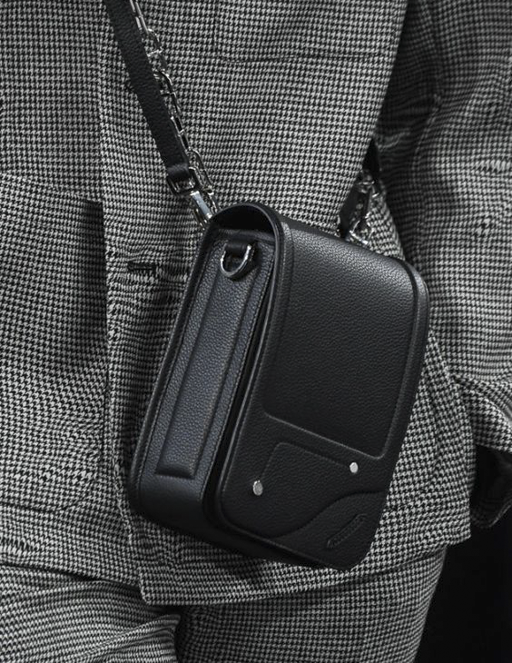

개인의 취향이 존중받는 개성 시대다. 이러한 흐름에 따라 패션에서도 새로운 바람이 불고 있다. 바로 성별의 경계를 넘은 스타일, 젠더리스 룩이 트렌드로 주목받고 있다. 젠더리스 패션은 자유롭고 새로운 패션 경향을 보여준다. 성과 나이에 한정되지 않으며 스스로 자유로운 의상을 선택할 수 있는 권리를 내포한다. 어떤 것보다도 강력한 패션 주체성을 뜻한다고 볼 수 있다.
여성들이 하듯이 남성 역시 성에 대한 장벽을 무너뜨리는 시도가 증가하고 있다. 남성에게 기대하는 남성스러움에 대한 무게감으로 인해 패션에 대한 자아실현을 쉽게 선보이지 못했지만 최근에는 많은 셀러브리티를 시작해 자신만의 철학을 담은 패션을 시도하는 남성이 늘고 있다. 남의 시선을 의식하지 않고 본인의 취향을 추구하는 심지어 멋스럽게 소화하는 그 모습은 ‘힙’해 보이기까지 한다.
남성도 더 이상 자신을 꾸미는 것에 방어적이거나 소극적인 행동을 취하지 않는다. 최근에는 남자 아이돌도 공식 석상에서 진주 귀걸이를 착용하기도 하며 뮤직비디오에서는 치마 형상을 한 의복을 입고있는 모습도 볼 수 있다.
'남자는 블루 여자는 핑크' 라는 낡은 사회적 관념은 깨졌고 남성복 브랜드에서는 핑크를 비롯한 다양한 파스텔톤의 옷들을 출시한다.
길게 늘여뜨린 리본, 레이스도 더이상 여성들만의 것이아니다. 요즘은 아이돌들의 무대의상에서도 많이 볼 수 있다.
스커트나 통이 넓은 와이드 팬츠도 인기를 얻고 있으며 무신사스토어에서는 와이드 팬츠 판매량이 전년 대비 300% 증가했다고 한다.

올해는 스마트폰, 이어폰, 지갑 등의 간단한 소지품만 들어가는 미니백과 더욱 작아진 마이크로 미니백이 여성에 이어 남성들 사이에서도 트렌드 아이템으로 자리 잡을 전망이다. 해외 브랜드 발렌티노, 디올, 돌체앤가바나 등은 20SS 시즌 컬렉션에 남성 미니백을 대거 등장시키며 미니백 트렌드의 시작을 알렸고 올해 초 진행된 20FW 컬렉션에서도 미니백을 든 남성 모델들이 런웨이에 오르며 남자 미니백 트렌드는 이번 봄, 여름을 지나 하반기까지도 지속될 것으로 예상된다.
청순함, 순결함, 고귀함을 상징하는 진주는 오랫동안 여성의 전유물로 여겨져 왔다. 그런데 요즘은 꼭 그렇지도 않다. 진주 목걸이를 한 새로운 세대의 남자들이 등장하고 있기 때문이다. 방탄소년단의 멤버 뷔도 진주를 활용한 패션을 선보여 화제가 됐다.
주얼리 브랜드에서도 젠더의 흐름을 읽고 남녀 성별에 구분을 두지 않은 주얼리들을 출시했다.
젠더리스는 성별의 경계를 허무는 패션 경향이다. 레이스나 벨벳, 러플 장식 등 여성복의 요소들을 활용한 남성 패션 스타일이 등장하고, 액세서리 스타일링도 새롭게 주목받는다. 이제 남성들은 귀밑으로 떨어지는 드롭 형태의 화려한 귀걸이를 착용하고, 대담한 디자인의 반지를 여러 개 겹쳐 끼기도 하며, 진주나 다이아몬드처럼 남성들이 잘 사용하지 않았던 보석도 기꺼이 활용한다.
지난해 5월 열린 ‘2019 디자인포럼’에서는 2019·2020년 주얼리 트렌드 키워드 중 하나로 ‘나그니처’가 제시됐다. 나(I)와 시그니처(Signature)의 합성어로 타인의 시선보다 자신의 확고한 취향에 따라 주얼리를 선택한다는 의미다. 젠더리스는 주얼리 시장에서도 트랜드로 주목받고 있다.